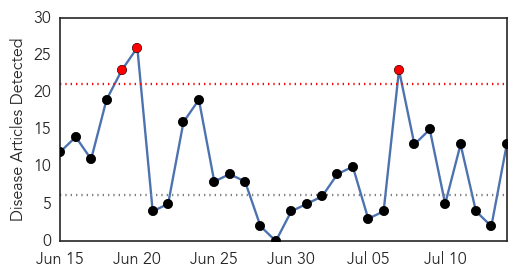
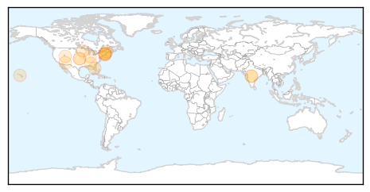

30 Day Trends
Web: 3 alerts, 0 warnings
Twitter: 0 alerts, 0 warnings
Top Articles:
- 0.995
- Three chikungunya cases in T&T
- 0.992
- Expert on threat of chikungunya virus
- 0.957
- K-State researcher says virus has come to Kansas / LJWorld.com
- 0.577
- Pathogens On A Plane: How To Stay Healthy In Flight
- 0.541
- Pathogens on a plane: How to stay healthy in flight
- 0.531
- Pathogens On A Plane: How To Stay Healthy In Flight
- 0.531
- Pathogens On A Plane: How To Stay Healthy In Flight
- 0.531
- Pathogens On A Plane: How To Stay Healthy In Flight
- 0.531
- Pathogens On A Plane: How To Stay Healthy In Flight
- 0.531
- Pathogens On A Plane: How To Stay Healthy In Flight
- 0.531
- Pathogens On A Plane: How To Stay Healthy In Flight
- 0.531
- Pathogens On A Plane: How To Stay Healthy In Flight
- 0.531
- Pathogens On A Plane: How To Stay Healthy In Flight
Top Tweets:
-
No tweets found for Jul 14, 2014
Web/News Articles
Tweets

Article Locations
Article Confidences